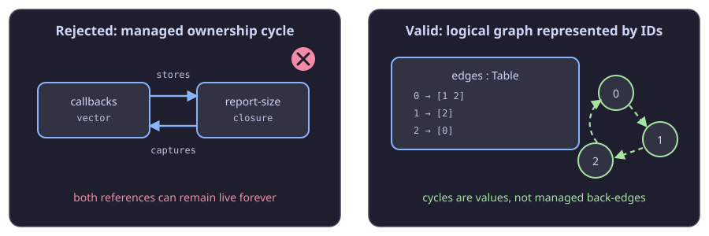
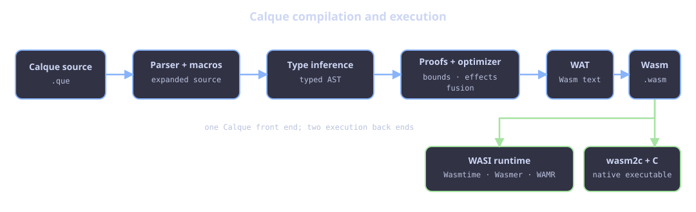
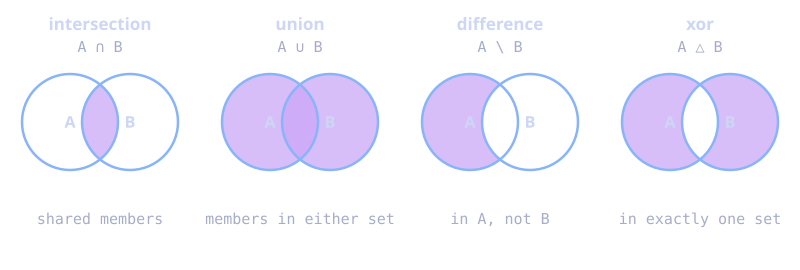

Introduction
Calque is a small, statically typed, expression-oriented Lisp and its
WebAssembly toolchain. It parses and type-checks a program, optimizes the typed
AST, lowers it to WebAssembly, and ships the que CLI, formatter, language
servers, runtime integration, and editor integrations.
Why
que? Calque is the language and toolchain name.queis its compact technical spelling: the command isque, source files end in.que, project configuration isque.toml, and the language server isquelsp.
Calque is designed for a particular trade-off: write direct functional code when it is the clearest model, and drop into explicit vectors, loops, and mutation when a program needs predictable work and memory behavior. The compiler type-checks the whole program before generating Wasm, and can explain many safety and optimization facts it proves.
(let sum-squares
(lambda (xs)
(|> xs
(map (lambda (x) (* x x)))
sum)))
(sum-squares [1 2 3 4 5])
; 55
What Calque provides
- Hindley–Milner type inference, polymorphic functions, and explicit
sigdeclarations where a boundary needs a known type. - Lexical closures, recursion, partial application, macro expansion, and data-last functional APIs.
- Mutable locals and mutable vectors with direct loop constructs.
- Deterministic reference-counted memory for vectors, tuples, and closures; source-level reference cycles are rejected.
- Fixed-size
Intarithmetic, fixed-pointDec, and compact closed enums. - Static warnings for likely out-of-bounds access, empty-vector operations, unsafe arithmetic, and termination facts that could not be proven.
- WebAssembly output that runs through an external WASI runtime, plus an optional wasm2c/native-C repository path for ahead-of-time native binaries.
- The
quecommand, formatter, language servers, and editor integrations.
Status and compatibility
Calque is pre-1.0. It has a substantial regression and differential test suite, but the language and standard-library API may still evolve. Treat the compiler version as part of a project’s build input; pin a release for long-lived work.
The rest of this book describes behavior implemented by the repository. For a live list of library signatures from the compiler you are actually running, use:
que --lib types
que --lib types 'Table/*'
que --lib source Table/get
Installation
Calque uses the que command and .que source files. The compiler is
installed separately from the WASI runtime that executes compiled programs.
wasmtime is the default runtime; wasmer and iwasm/WAMR also work.
Compiler and bundled library
macOS and Linux
The installer downloads the latest release for the current architecture and
installs que in /usr/local/bin and the bundled library in
/usr/local/share/que. It may ask for your sudo password.
curl -fsSL https://raw.githubusercontent.com/AT-290690/que-script/main/scripts/install.sh | bash
Install a compatible WASI runtime separately and ensure it is on PATH. Then
verify the installation:
que --help
wasmtime --version
Windows
Run this in PowerShell. It installs the latest que.exe and que-lib.lisp
under %LOCALAPPDATA%\\Programs\\Que and adds its bin directory to your user
PATH; administrator rights are not needed.
irm https://raw.githubusercontent.com/AT-290690/que-script/main/scripts/install.ps1 | iex
Restart PowerShell after the installer finishes, then install a compatible
WASI runtime separately (normally Wasmtime) and ensure it is on PATH:
que --help
wasmtime --version
For one invocation, choose a runtime other than the default:
que hello.que --runtime wasmer
que hello.que --runtime /path/to/iwasm
Language server and editors
quelsp is a separate executable. It provides diagnostics, type hovers,
completion, signatures, formatting integration, and project-aware navigation.
It does not need a WASI runtime merely to serve an editor.
macOS and Linux
curl -fsSL https://raw.githubusercontent.com/AT-290690/que-script/main/scripts/lsp.sh | bash
quelsp --help
Windows
Run this in PowerShell after the compiler installation:
irm https://raw.githubusercontent.com/AT-290690/que-script/main/scripts/lsp.ps1 | iex
Restart PowerShell if necessary, then check it:
quelsp --help
The VS Code extension uses quelsp from PATH by default. To choose a
specific executable, set que.languageServer.path to its full path. The
included Neovim integration also looks for quelsp on PATH.
For the managed Neovim workstation on a fresh Linux machine—Calque, quelsp,
Wasmtime, Neovim, Telescope, Catppuccin, and the Calque setup—use:
curl -fsSL https://raw.githubusercontent.com/AT-290690/que-script/main/scripts/install-all-linux.sh | bash
See Projects, tests, and editors for Neovim commands, VS Code configuration, and project behavior.
Getting started
Install Calque, a WASI runtime, the language server, and optional editor
integration by following Installation. Once que is on
your PATH, continue here.
First program
Create hello.que:
(let greeting "Hello, Calque!")
(println! greeting)
Run while developing:
que hello.que --debug --allow print
Use --opt for release-style execution after checking the program’s
invariants:
que hello.que --opt --allow print
--debug keeps runtime guards for checked integer arithmetic, division by
zero, and vector access where appropriate, and reports static-analysis
findings. --opt enables optimization and removes those optional runtime
guards; it is not a substitute for establishing correctness.
Learn from the installed compiler
que --help
que --learn
que --examples
que --style
que --pitfalls
Evaluate a small source expression without making a file:
que --eval '(+ 20 22)' --debug
A project
A project uses que.toml to supply optional source dependencies and compiler
environment settings:
entry = "main.que"
deps = ["./lib/math.que"]
[env]
QUE_TCO = "aggressive"
Run the entry file explicitly from the project folder:
que main.que --debug
Calque discovers the nearest que.toml, loads deps as definition bundles, and
applies its [env] settings. See Projects, tests, and
editors for the exact rules.
Language tour
Calque is an expression language. A program is a sequence of forms and its
last value is the result. Function bodies also sequence their forms, so a
separate do is useful for readability but not required merely to sequence.
(let classify
(lambda (x)
(cond (< x 0) "negative"
(= x 0) "zero"
"positive")))
(map classify [3 -1 0 8])
; ["positive" "negative" "zero" "positive"]
block is different from sequencing: it creates a lexical scope. Use it when
two branches or repeated loop bodies need their own local bindings.
(if enabled?
(block (let label "on") label)
(block (let label "off") label))
Data and calls
[1 2 3] ; vector
{ "Ada" 37 } ; tuple
"hello" ; string, typed as [Char]
'x' ; Char
true ; Bool
nil ; unit, type ()
(+ 20 22) ; ordinary prefix call
(map (lambda (x) (* x x)) [1 2 3])
Calls are curried. Supplying fewer arguments produces a function value, which makes partial application useful but also means that accidentally omitting an argument can produce a closure instead of an immediate error.
(let add2 (+ 2))
(add2 40) ; 42
Functional and imperative code together
Collection transforms use data-last arguments so they compose naturally:
(|> [1 2 3 4 5 6]
(select (lambda (x) (= (% x 2) 0)))
(map (lambda (x) (* x x))))
; [4 16 36]
For a hot update loop, use a mutable local and a mutable vector directly:
(let increment-all!
(lambda (xs)
(loop i (< i (length xs))
(set! xs i (+ (get xs i) 1)))
xs))
(increment-all! [10 20 30])
; [11 21 31]
The following chapters spell out the rules behind these examples.
Types
Calque infers types with Hindley–Milner inference. Most bindings need no type annotation; incompatible uses are errors before Wasm generation.
Core types
| Source type | Meaning |
|---|---|
Int | signed 32-bit integer (i32) |
Dec | fixed-point decimal backed by a scaled i32 |
Bool | true or false |
Char | a Unicode scalar value |
() | unit; nil has this type |
[T] | vector of values of type T |
{A B} | ordered tuple |
A -> B | function from A to B |
Name | a declared enum type |
Strings are [Char]. This makes string operations ordinary vector-oriented
operations at the language level; it does not mean strings are a packed
UTF-8 byte array in the current runtime representation.
(let count 3) ; Int
(let ready? true) ; Bool
(let title "Calque") ; [Char]
(let pair {count title}) ; {Int [Char]}
Numeric types
Int does not silently become Dec. Use the decimal operators (+., -.,
*., /.) and conversions such as Int->Dec / Dec->Int when crossing the
boundary. The suffixed comparison operators follow the same pattern: <. for
Dec, <# for Char, and so on.
Dec source literals are parsed as exact base-10 values. At runtime, a Dec
is a scaled signed i32 (scale 1000 by default and configurable with
QUE_DECIMAL_SCALE at compile time). Decimal multiplication and division use
i64 intermediates before returning to the configured fixed-point scale.
Int overflow is meaningful: in debug mode guards can trap it, and strict
analysis reports arithmetic it cannot prove safe. The /safe?, +/safe?,
*/safe?, and related predicates can establish a guarded operation.
Polymorphism
Library functions and ordinary inferred functions may be generic:
(let first-or
(lambda (fallback xs)
(if (empty? xs) fallback (car xs))))
Its shape is conceptually T -> [T] -> T: the fallback and vector element
must be the same type, but callers choose that type independently.
Use a sig when an external boundary needs a concrete type or when you want
to state the public contract explicitly. See Inference and
signatures.
Hindley–Milner inference in Calque
Calque uses Hindley–Milner-style inference: most source programs do not need annotations, yet a binding is checked consistently at every use. The implementation follows the usual Algorithm W shape—fresh type variables, constraints, unification, and generalization—while collecting constraints and solving them at binding boundaries. This gives better source locations for diagnostics than a presentation of the algorithm that only returns a type.
The small mathematical core
The notation below is useful when reading an inferred type or a compiler diagnostic:
τ ::= Int | Dec | Bool | Char | () | α
| [τ] | {τ τ} | τ -> τ | EnumName
σ ::= ∀α₁ … αₙ. τ
Γ ⊢ e : τ
τ is a monotype, α is an unknown type variable, σ is a polymorphic type
scheme, and Γ ⊢ e : τ reads “under type environment Γ, expression e has
type τ.” Calque source prints inferred unknowns as names such as T0; the
Greek letters are only the conventional mathematical notation.
For a lambda, the parameter starts with a fresh unknown type:
Γ, x : α ⊢ body : β
─────────────────────
Γ ⊢ (lambda (x) body) : α -> β
For an application f x, the compiler creates a fresh result type β and
requires the type of f to unify with type(x) -> β. Unification recursively
matches the structure of functions, vectors, and tuples. It includes an
occurs check, so it cannot invent an infinite type such as α = [α].
At a safe let binding, the compiler quantifies the variables that are free
in the value but not free in the surrounding environment:
generalize(Γ, τ) = ∀(ftv(τ) − ftv(Γ)). τ
For example, the identity function is inferred once as ∀α. α -> α; each use
instantiates α with a fresh unknown, so one call may use Int and another
may use [Char].
(let id (lambda (x) x))
{(id 42) (id "Calque")}
; {Int [Char]}
There is no implicit numeric subtyping or promotion in these rules. Int and
Dec unify only with themselves; use an explicit conversion when crossing
that boundary.
Product, vector, and enum types
HM’s core is deliberately small. Calque extends its type grammar with the following structural and nominal types.
Vectors are homogeneous. [T] has exactly one element type. A vector
literal adds a constraint that every element has that same type:
(let scores [10 20 30]) ; [Int]
; [10 true] ; type error: Int and Bool do not unify
The same relationship is carried through vector operations:
get : [T] -> Int -> T
set! : [T] -> Int -> T -> ()
push! : [T] -> T -> ()
Tuples are ordered pairs and may be heterogeneous. {A B} means the
first field has type A and the second has type B; unification checks both
positions independently.
(let entry {"Ada" 37}) ; {[Char] Int}
Enums are nominal, closed types. An enum declaration makes every variant
belong to that one named type. Its compact runtime i32 tag does not make it
an Int at the language level. =~ requires both operands to have the same
enum type, and match checks coverage of that closed variant set. See Enums
and matching.
Mutation and the value restriction
Plain HM generalizes every suitable let. That is unsound in the presence of
mutable containers: if an empty vector were independently polymorphic at each
use, one use could store an Int and another could read it as a Bool.
Calque therefore uses a value restriction. It generalizes non-expansive bindings—such as literals, names, and lambdas—but an allocating expression such as a vector is kept monomorphic for its binding. Its element type is still inferred; it is simply shared by every later mutation.
(let xs [])
(push! xs 1) ; fixes xs as [Int]
; (push! xs true) ; type error
mut bindings are monomorphic by design and retain one type throughout their
updates:
(mut total 0)
(alter! total (+ total 1))
; (alter! total true) ; type error
The &mut, &get, and &alter! forms are library macros over an ordinary
one-element vector cell, so they inherit the same vector constraints rather
than introducing a hidden second reference type.
Effects are tracked alongside inferred expressions as compiler metadata:
pure, mutation, host I/O, or an unknown call. They help diagnostics,
permission checking, and optimization, but they are not currently an
effect-row type system: an arrow such as Int -> Int does not encode an
effect. See Effects and permissions.
Recursion, macros, and signatures
For letrec, Calque first binds the recursive name to a fresh monomorphic
placeholder, infers its value, and then unifies the placeholder with that
value. This is why a recursive call must agree with the function being
defined. letrec is intended for self-recursive functions; mutually recursive
definitions do not have a separate forward-declaration form.
Macros expand before inference. The expanded ordinary Calque expression is what receives these HM constraints, which keeps macros syntactic rather than an untyped escape hatch.
sig writes a contract in the same type language and verifies the inferred
binding against it. It is useful for public APIs and for boundaries such as
deserialize, where the desired result type cannot be recovered from the
serialized text alone. See Inference and signatures for
the syntax and diagnostics.
Bindings and scope
Immutable and mutable locals
let binds an ordinary lexical name. A let binding cannot be reassigned.
(let greeting "hello")
(let answer (+ 40 2))
mut declares a mutable local. Update it with alter!, +=, ++, and the
other mutation helpers:
(mut total 0)
(alter! total (+ total 10))
(+= total 20)
(++ total)
total ; 31
alter! takes a value, not a callback. It is equivalent in spirit to
assignment after the new expression has been evaluated.
Destructuring
Tuple and vector patterns can bind components directly:
(let {name age} {"Ada" 37})
(let [first second] [10 20])
Vector destructuring has the usual shape constraint: a fixed pattern such as
[a b] requires the vector to contain those elements. The analyser
may warn when it cannot prove that fact. A final . rest binding works in
both let and lambda vector patterns:
(let [a b . rest] [10 20 30 40])
a ; 10
b ; 20
rest ; [30 40]
(let get-head (lambda ([x . xs]) x))
The names before . bind fixed positions. rest is the same tail window as
(cdr vector fixed-position-count): it begins after those positions without
initially copying the remaining values. It materializes independently if you
mutate it. The rest pattern must be final and can bind one name only.
Scope
Names are lexical. A binding introduced by block is not visible after that
block:
(let label
(if true
(block (let value "yes") value)
(block (let value "no") value)))
do sequences values but does not make a lexical scope. This distinction
matters in branches and loops: prefer block for branch-local temporary
bindings.
Reference cells
&mut, &get, and &alter! are macros for an explicit mutable cell. They
are useful when a closure must update state that outlives a single local scope:
(&mut counter 0)
(let next!
(lambda ()
(&alter! counter (+ (&get counter) 1))))
(next!) ; 1
(next!) ; 2
They preserve the compiler’s normal mutation analysis; they are source-level convenience forms, not an untyped escape hatch.
Functions and recursion
Lambdas and calls
Use lambda to build a function. Parameters can be written as one name or a
group:
(let square (lambda (x) (* x x)))
(let add (lambda (left right) (+ left right)))
(square 9)
(add 20 22)
Multiple forms in a lambda body are evaluated in order; its final form is the return value.
(let magnitude
(lambda (x)
(let value (if (< x 0) (- 0 x) x))
value))
Functions are first class and lexical closures capture the bindings they use.
Calls support partial application, so (map square) is a function waiting for
its vector argument.
Recursive bindings
Use letrec when the binding calls itself:
(letrec factorial
(lambda (n)
(if (<= n 1)
1
(* n (factorial (- n 1))))))
Recursion is intentionally explicit. A let binding cannot refer to itself;
this avoids accidental forward references and makes recursive intent obvious.
The current type system does not permit arbitrary mutually recursive
definitions through forward references.
Tail calls and loops
Write direct loops for work that is naturally iterative. Calque recognizes and
optimizes important tail-recursive shapes, but a loop / while makes the
space behavior explicit and maps directly to Wasm control flow.
(let factorial
(lambda (n)
(mut result 1)
(loop i (<= i n)
(alter! result (* result i)))
result))
Use que explain program.que --opt to see whether the analyser proved a
recursive function or loop terminating, and use the generated output when
investigating performance.
Control flow
All control forms are expressions.
if, cond, and when
(if (> score 0) "positive" "not positive")
(cond
(< score 0) "negative"
(= score 0) "zero"
"positive")
(when ready?
(println! "go"))
(unless ready?
(println! "wait"))
cond tests each condition in order. Its last unpaired expression is the
default branch. when, when-not, and unless are bundled macros. when
and when-not are for effects: their implicit false branch is nil, so use
if or cond when both branches must produce a useful value.
while and loop
while runs while its condition is true. The counter-style loop macro
introduces and updates its named counter for you:
(mut i 0)
(while (< i 3)
(println! (Integer->String i))
(++ i))
(loop i (< i 3)
(println! (Integer->String i)))
println! has type [Char] -> (): convert an Int with
Integer->String, or build text with functions such as join.
There are library macros for common forms:
(loop/for i 1 (<= i 10) (++ i) (println! (Integer->String i)))
(loop/in value [10 20 30] (println! (Integer->String value)))
(loop/in/i index value [10 20]
(println! (join ":" [(Integer->String index) (Integer->String value)])))
(times 3 (println! "tick"))
The correctness analyser recognizes many counter loops and can show the
initial value, condition, update, and exit bound in que explain. It is
conservative: “unknown” means it did not establish a proof, not that the loop
is definitely infinite.
block and do
Use block when a control-flow branch needs its own bindings. Use do only
when you need explicit sequencing without a new scope.
Vectors, tuples, strings, and characters
Vectors
Vectors are homogeneous mutable collections written with square brackets:
(let xs [10 20 30])
(get xs 1) ; 20
(set! xs 1 99)
(push! xs 40)
(pop! xs)
The basic operations are:
| Form | Meaning |
|---|---|
(length xs) | number of elements |
(get xs i) | element at index i |
(set! xs i value) | replace an existing element, or append at length |
(push! xs value) | append |
(pop! xs) | remove the final element |
(pop-val! xs) | remove and return the final element |
(empty! xs) | set length to zero while retaining allocated capacity |
(car xs) | first element; equivalent to (get xs 0) |
(cdr xs), (cdr xs n) | tail window from offset 1 or explicit offset n |
get is guarded in debug mode when the compiler cannot prove the access safe.
Optimized code relies on the established invariant, so write an explicit guard
or structure the loop so that the proof is obvious:
(loop i (< i (length xs))
(println! (get xs i)))
cdr initially shares the source vector’s backing storage and shifts the
logical start index; it does not copy every tail. Mutating that result
materializes an independent vector, so it cannot change the original. See
Functions by example
for a complete example and the retention trade-off.
Tuples
Tuples are fixed-size heterogeneous values:
(let person {"Ada" 37 true})
(fst person) ; "Ada"
(snd person) ; 37
(let {name age active?} person)
Use tuples for a small fixed record-like value. A tuple has positional fields; names in a destructuring pattern are local variable names, not stored field names.
Strings and characters
Strings are sequences of Char values, so their language type is [Char]:
(let title "Calque")
(get title 0) ; 'Q'
(length title) ; 3
(cons "Hello, " title)
Character literals use single quotes. Use =#, <#, +#, and related
operators for character arithmetic and comparison; use Char->Int and
Int->Char when deliberately converting code points.
The bundled library provides split, split/lines, join, trim, slice,
String->Integer, Integer->String, String/contains?, String/starts?,
and other text functions. Their exact signatures are available through:
que --lib types 'String/*'
que --lib types 'split*'
Enums and matching
An enum declares a closed set of zero-payload values:
(enum Shape Rock Paper Scissors)
Rock, Paper, and Scissors have type Shape; they are not Int values
even though the compiler represents them compactly as i32 tags at runtime.
That separation prevents mixing unrelated domains by accident.
If names would collide, choose qualified ordinary identifiers yourself:
(enum Traffic Traffic/Red Traffic/Amber Traffic/Green)
Compare enum values
Use =~ for enum equality:
(=~ Rock Paper) ; false
(=~ Rock Rock) ; true
Both operands must have the same enum type. =~ Rock 1 and comparison between
values from two distinct enums are type errors. Ordinary = remains the
integer equality operator; this deliberate distinction stops an enum tag from
silently becoming an arbitrary number.
Exhaustive match
match is for enum dispatch. It requires every variant, unless the final
branch is _:
(let score
(lambda (shape)
(match shape
Rock 1
Paper 2
Scissors 3)))
(let describe
(lambda (shape)
(match shape
Rock "rock"
_ "another shape")))
The match expression is checked statically. Adding a variant to a fully matched enum exposes every site that must decide how to handle it.
Enums in functions and Tables
Enum values flow through ordinary variables and functions:
(let winner?
(lambda ({left right})
(or (and (=~ left Rock) (=~ right Scissors))
(and (=~ left Paper) (=~ right Rock))
(and (=~ left Scissors) (=~ right Paper)))))
They are also efficient Table keys. Their compact tags are hashed and
compared directly—there is no conversion to a string:
(sig points [[{ Shape Int }]])
(let points (Table/new))
(Table/set! points Rock 1)
(Table/set! points Paper 2)
Current enums have no payload variants. match/string remains available for
the older string-dispatch macro use case.
Mutation and capacity
Mutation is explicit in both spelling and type/effect analysis. Use it for local counters, in-place algorithms, and predictable allocation behavior.
Locals and vectors
(mut total 0)
(loop i (< i 10)
(+= total i))
(let xs [])
(push! xs total)
(set! xs 0 42)
The caller-visible mutable value of a function is normally rooted in its first parameter. This keeps mutation APIs regular:
(let fill-zeroes!
(lambda (xs)
(loop i (< i (length xs))
(set! xs i 0))
xs))
Reserving vector storage
capacity! reserves backing storage without changing a vector’s length:
(let paths [])
(capacity! paths 1000)
(loop i (< i 1000)
(push! paths i))
It is useful before a known burst of appends. It returns unit, deliberately:
the vector itself remains the same mutable value. empty! similarly resets
the vector’s length while retaining storage for reuse.
(empty! paths)
; paths can be refilled without reallocating until it grows past capacity
capacity! is a reservation, not a maximum length. Appending more than the
requested capacity remains valid and grows the vector as needed.
Safe, fast code
For debug builds, Calque can trap unproven bad indices and checked arithmetic.
For optimized builds, organize loops so que explain can see basic facts such
as 0 <= i < length(xs). This lets the compiler remove checks where safe,
while the source retains its clear invariant.
Memory management and ownership
Calque has no tracing garbage collector. Managed values use runtime reference
counting: the compiler inserts retains, releases, and ownership transfers for
you. There is no free, borrow annotation, lifetime syntax, or manual retain
operation in ordinary Calque source.
This is designed to make memory behavior predictable: when the final live reference to a managed value is released, its storage can be reclaimed immediately by the runtime allocator. The optimizer can also transfer a fresh value directly to its final owner, or release a value after its last use, which avoids needless retain/release traffic.
What is managed
Int, Dec, Bool, Char, unit, and enum tags are immediate i32 values.
They do not allocate and do not participate in reference counting.
Vectors, strings ([Char]), tuples containing managed values, and closures
are managed heap values. The rule is implementation detail, not an operation
you normally need to write around:
(let title "Calque") ; a managed character vector
(let pair {title [1 2 3]}) ; managed tuple containing managed vectors
(let prefix (lambda (x) ; managed closure: it captures title
(cons title x)))
(prefix " is typed")
Aliasing is safe. If two bindings refer to the same vector, it remains alive until neither binding (nor any live container or closure) owns it:
(let xs [1 2 3])
(let also-xs xs)
(length also-xs)
You should write the direct program. Calque determines when a retain is needed, when a value can be moved instead, and when it can be released.
Why cycles are forbidden
Reference counting alone cannot reclaim a cycle. If a vector owns a closure and that closure captures the same vector, both counts can remain nonzero even after the surrounding program has stopped referring to either one.
Calque therefore rejects source-level operations that would form a managed reference cycle. This program is rejected at compile time:
(let callbacks [])
(let report-size
(lambda ()
(length callbacks)))
; Error: report-size captures callbacks, then is stored in callbacks.
(push! callbacks report-size)

The same protection applies to direct set! and recognised container
mutators—such as table, set, heap, and deque operations—and also follows a
simple wrapper function that stores one of its arguments into another. The
diagnostic identifies the storing operation and the captured managed root.
Capturing a collection is fine by itself. It is the back-edge—putting that capturing closure into the collection it captures—that is not allowed:
(let xs [1 2 3])
(let size
(lambda ()
(length xs)))
(size)
; 3 — no cycle: xs does not own size.
This restriction is intentional. Calque does not promise a cycle collector as a fallback, because that would lose deterministic reclamation and introduce a second memory-management model.
Model graphs with IDs, not object back-edges
Cycles in the data you model are perfectly valid. Represent graph edges with integers, strings, enum tags, or table keys rather than managed pointers or closures that refer back to their owner:
; Node id -> ids of outgoing neighbours.
(let edges (Table/new))
(Table/set! edges 0 [1 2])
(Table/set! edges 1 [2])
(Table/set! edges 2 [0])
That graph has a logical cycle (0 → 1 → 2 → 0), but its values do not own one
another. It is ordinary acyclic runtime storage and works with the graph
helpers in the standard library.
For parent links, caches, registries, or callback dispatch, use an ID or a key into an owner table instead of storing a closure back into the structure that closure captures.
Mutation, capacity, and observable memory
empty! removes vector elements. If those elements are managed, their owned
references are released; the vector’s backing allocation is retained for
reuse. capacity! reserves backing storage and compact! rebuilds a vector
with only the storage required by its current length:
(let work [])
(capacity! work 1000)
; fill and process work
(empty! work) ; elements are released; reserved storage stays reusable
(compact! work) ; discard unused backing capacity
Releasing an object returns it to Calque’s allocator. It does not guarantee that a WebAssembly runtime immediately returns linear-memory pages to the operating system, so RSS may remain high after a temporary peak. The important semantic guarantee is that unreachable managed objects do not remain live; their storage is available for reuse without a tracing-GC pause.
Performance and external hosts
Reference counting has a cost when a managed value is shared. Calque’s
optimizer removes redundant retain/release pairs, transfers ownership of fresh
values, and specializes known vector paths where it can. Use que explain program.que --opt when investigating retained/released work in a hot path.
--debug and --opt use the same ownership semantics. Debug mode adds safety
guards; optimized mode may remove proven-safe checks and redundant ownership
traffic, but it never makes cycles valid.
The rule also matters at FFI boundaries. A custom Wasm host that constructs or retains Calque-managed values must obey the runtime ownership convention. Do not use a host import to manufacture a cyclic Calque object; it bypasses the source-level proof that keeps ordinary programs cycle-free. See FFI and host imports for the ABI boundary.
Pipelines and composition
Most functional library APIs take their data argument last. That makes a pipeline read from input to result:
(|> [1 2 3 4 5]
(select (lambda (x) (> x 2)))
(map (lambda (x) (* x x)))
sum)
; 50
|> inserts the value on its left as the final argument of each following
form. The reverse pipeline <| inserts it as the first argument instead.
(let parse-ids
(comp
trim
split/lines
(map String->Integer)))
(parse-ids "1\n2\n3")
comp builds a left-to-right data-last pipeline: the first listed function
receives the input first. Pipelines are often more readable for a one-off
transformation because they keep the data visible.
Point-free definitions
When the input is only passed from one transformation to the next, a named
parameter adds no information. comp lets you define that function without
spelling the parameter: this is point-free style.
; Explicit input and pipeline.
(let parse-ids
(lambda (input)
(|> input
trim
split/lines
(map String->Integer))))
; The same function, point-free.
(let parse-ids
(comp
trim
split/lines
(map String->Integer)))
The stages still run left to right. A bare name is a stage such as trim; a
form such as (map String->Integer) supplies its non-data arguments first and
receives the composed input last. Therefore the definition above behaves like:
(lambda (input)
(map String->Integer (split/lines (trim input))))
This is especially useful for parsers and reusable collection transforms:
(let positive-squares
(comp
(select (lambda (n) (> n 0)))
(map (lambda (n) (* n n)))))
(positive-squares [-2 -1 0 1 2])
; [1 4]
Use comp when it makes the flow clearer. When a step needs to name an
intermediate value, branch, or perform several effects, an ordinary lambda
and |> are usually easier to read.
apply is a source-level macro that splices the written argument forms into a
call. It is useful when another macro is constructing a call; it does not
unpack a runtime vector:
(apply + 20 22) ; expands to (+ 20 22), therefore 42
|>, <|, comp, and apply are bundled macros. They expand before
inference and code generation, so they do not add a dynamic dispatch cost.
Extremely long pipeline expansions are intentionally bounded to keep macro
expansion predictable; normal pipelines are unaffected.
Macros
Macros transform syntax before the program is inferred and compiled. They are
written in Calque using letmacro, quasiquote (qq), unquote (uq), and
unquote-splice (uqs).
(letmacro unless
((test body)
(qq (if (uq test) nil (uq body)))))
(unless (= 1 2)
(println! "runs"))
Macros are appropriate when you need new surface syntax or want to generate a repeated structural pattern. They are not ordinary runtime functions: they receive syntax, not evaluated values.
Bundled macros
The bundled library implements many familiar forms as macros, including:
when,when-not,unless,cond,!=,<>|>,<|,comp,applyloop,loop/for,loop/in,loop/in/i, range-loop helpers,timeslet*,+=,-=,*=,/=,++,--&mut,&get,&alter!,variablematch/string
Use que <file> --emit source to inspect expanded source and understand what
a macro call becomes. Formatter, LSP, and diagnostics preserve source
locations where possible, but macro-generated code can still make a complex
error easier to understand after looking at that expansion.
Macro discipline
Prefer a function when values are enough. Prefer a macro when the caller needs new binding structure, control flow, or syntactic rearrangement. Keep macro expansions small, hygienic in spirit, and transparent enough that the expanded form remains ordinary, type-checkable Calque.
Writing a macro
A macro transformer receives the written syntax at its call site and must return replacement syntax. The smallest form uses a lambda transformer and quasiquote:
(letmacro add1
(lambda (x)
(qq (+ (uq x) 1))))
(add1 41)
; expands to: (+ 41 1)
; 42
qq constructs the output program. Inside it, ordinary words and lists are
literal output syntax. (uq x) inserts the single syntax form supplied as
x; it does not evaluate that form. In the example, (add1 (+ 20 21))
becomes (+ (+ 20 21) 1), then normal type checking and evaluation happen.
Macros can also use pattern clauses. This version of unless accepts zero or
more body forms, and uses uqs to splice all of them into the generated
do:
(letmacro unless*
(()
(qq nil))
((test . body)
(qq (if (uq test) nil (do (uqs body))))))
(mut total 0)
(unless* false
(++ total)
(++ total))
total
; 2
Use uq for one expression and uqs only where a surrounding list or body
accepts several forms. The rest pattern . body is syntax-list rest capture;
it is not a runtime vector value.
Generated bindings and gensym
If a macro introduces a local name, create it with gensym. It produces a
fresh identifier, avoiding accidental capture of a caller’s name. This macro
evaluates its input once, then reads its final element:
(letmacro last-item
(lambda (xs)
(do
(let values (gensym))
(qq
(block
(let (uq values) (uq xs))
(get (uq values) (- (length (uq values)) 1)))))))
(last-item [10 20 30])
; 30
The generated values cannot collide with a caller’s values binding. Like
car, this macro requires a non-empty vector; macros preserve the ordinary
runtime and static-safety rules of the forms they expand to.
Syntax-time helpers
For macros that inspect or rebuild an arbitrary syntax list, use the
syntax-only helpers syntax/list?, syntax/empty?, syntax/head,
syntax/tail, syntax/prepend, syntax/append, syntax/word?, and
syntax/word=?. They are available only while a letmacro expands; they are
not runtime data-structure functions. The implementation of |> in the
bundled library is the reference example of this more advanced style.
Debugging an expansion
Define a macro before its use, keep its expansion small, and inspect what the compiler will receive when a type error is unclear:
que program.que --emit source
The result is expanded Calque source. It is particularly useful for checking
uq versus uqs, generated bindings, and a macro that introduces control
flow. The expanded result must still type-check like handwritten Calque.
Inference and signatures
Calque infers types for ordinary bindings and generalizes them where valid. Start without annotations:
(let id (lambda (x) x))
(let pair-with (lambda (left right) {left right}))
The compiler rejects inconsistent uses before code generation.
sig
Use sig immediately before a binding when the program crosses a boundary
whose type cannot be inferred from ordinary use, or when you want to state the
binding’s contract:
(sig parse/int! ([Char] -> Int))
(let parse/int! (lambda (text) (deserialize text)))
deserialize is the important practical example: serialized characters do not
contain enough static information for the compiler to know which decoder to
generate. The signature supplies the expected result type.
(enum Shape Rock Paper Scissors)
(sig restored [[{ Shape Int }]])
(let restored (deserialize saved))
The type above is the physical representation of a Table in the current
library: a vector of buckets, each containing {key value} entries. Programs
normally use Table/new, Table/set!, and Table/get; the representation only
needs to be written at a serialization boundary.
Function type syntax
(sig increment (Int -> Int))
(sig compare (Int -> Int -> Bool))
(sig map-int ((Int -> Int) -> [Int] -> [Int]))
An arrow chain associates to the right. Parenthesize a function when it is an argument type.
Inspect inferred types
que program.que --emit types
que explain program.que
The LSP also exposes inferred types in hover information. Use a sig to make
an intended public type visible and enforced, not merely to silence inference.
Correctness analysis
The type checker catches incompatible values. Calque’s static analyser adds conservative warnings about runtime properties that types alone cannot prove.
Enable strict warnings in a source file:
; use-strict-warnings!
Or inspect a full report:
que explain program.que --opt
que explain program.que --opt --json
The report groups warnings before termination, effects and permissions, performance observations, and generated-code details.
Reading que explain
que explain is the programmer-facing view of the typed program, static
proofs, and generated WAT shape. It does not run the program or benchmark it.
Use --opt when you want its generated-code and performance observations to
describe the optimized build you intend to run:
que explain program.que --opt
que explain program.que --opt --json --out explain.json
The text report has these sections:
| Section | What it tells you |
|---|---|
| Result type | The inferred type of the final user expression. |
| Correctness | Static arithmetic/bounds warnings, source locations, suggestions, and successful bounds proofs. |
| Termination | A proven or unknown result for analysed loops and recursive functions, including the inferred measure when available. |
| Effects and permissions | The combined effect (pure, mutation, host I/O, or unknown call) and required host imports. |
| Performance | A static count of allocations, dynamic applies, checked/unchecked reads, direct calls, and WAT bytes. |
| Generated code | Per-function allocation and call details, plus inferred source-form types and effects. |
For a safe counted access, the useful part looks conceptually like this:
Correctness:
Proven bounds:
(get xs i) proven safe
0 <= i <= 9
Termination:
proven terminating: while (< i (length xs))
i increases toward the exit bound
The report’s performance section is deliberately static WAT shape, not a runtime profile. It can identify a remaining allocation or bounds check and point toward a useful rewrite, but timing, CPU effects, and allocator behavior still require a real benchmark.
--json contains the same information in stable fields such as
result_type, warnings, bounds_proofs, termination, effect,
host_imports, metrics, compiled_functions, and optimization_targets.
That form is intended for editor integrations, CI, and custom reporting.
The analysis model
Type inference answers questions such as “is this value an Int or a
[Char]?” It cannot answer “can this Int overflow?” or “is this index below
this particular vector’s length?” Calque runs a second, flow-sensitive static
analysis after type inference for those questions.
It is an abstract interpreter: it executes a finite mathematical summary of the program rather than executing its concrete values. A useful simplified view of the state at a program point is:
S = (R, L, A, P)
R(x) = [lower, upper] possible Int range for x
L(xs) = n or >= n known exact or minimum vector length
A symbolic affine relations, such as i < length(xs)
P path facts, aliases, and recognised guard summaries
For example, on the true path of this condition the analyser refines the
abstract state to include both facts needed by get:
(if (and (>= i 0) (< i (length xs)))
(get xs i)
fallback)
true path: 0 <= i < length(xs)
therefore: (get xs i) is proven safe
It keeps bounded alternatives when useful—for example, a value known to be
negative or positive rather than merely “some Int”—and tracks simple
affine relations such as a + b <= 2147483647. Arithmetic ranges are
calculated in a wider analysis domain, then checked against the signed i32
range used by Int.
Control flow and loops
The analyser refines facts independently along each branch. Where paths meet, it retains only facts that remain valid on every incoming path. Informally:
after (if condition left right) = join(state(left), state(right))
Loops require a fixed point: the body is analysed repeatedly until its summary stops gaining useful facts. Widening deliberately broadens a changing range when necessary so this process always finishes. That is why Calque can prove common counted loops without attempting to solve the halting problem.
(loop i (< i (length xs))
(get xs i))
The loop supplies an initial value, condition, and update. The analysis derives
0 <= i < length(xs) for the body, proves the read safe, and can record the
counter as moving toward its exit bound.
Proof outcomes
Each checked operation has one of three outcomes:
| Result | Meaning |
|---|---|
| proven safe | Every abstract execution reaching the operation satisfies the required fact. |
| definitely invalid | Every possible execution violates it, such as a known negative index. |
| unknown | The analysis cannot establish either conclusion with its conservative model. |
Only a proven-safe fact is eligible for an optimization such as omitting a
runtime bounds check. unknown is intentionally not a claim that the program
fails; write a guard, simplify the shape, or keep the check if the invariant
lives outside the visible source.
The same model supports several analyses:
- bounds and non-empty vectors —
get,set!,car, andpop-val!; - arithmetic —
+,-,*,/, and%, including a non-zero divisor and the specialminimum Int / -1overflow case; - termination evidence — counted loops and recursive calls whose argument is shown to move toward a base-case guard;
- effects — mutation, host I/O, and calls whose effect cannot yet be resolved.
Recognised helper predicates can carry proof information too. A conventional
definition such as in-bounds? can establish a later get when its true
branch is taken, and +/safe? can establish the corresponding guarded
addition. The analyser is conservative about aliases and mutation: once a
fact may have been invalidated, it stops relying on it.
Bounds and empty vectors
The analyser recognizes common loop shapes:
(loop i (< i (length xs))
(get xs i))
Here it can establish 0 <= i < length(xs). If it cannot prove an access, it
reports the source expression and suggests a guard such as:
(and (>= index 0) (< index (length xs)))
It also reports calls such as pop!, pop-val!, and car when the vector may
be empty. A warning is not necessarily a bug: it says a proof was unavailable.
Arithmetic
Int is signed i32. The analyser tracks ranges where it can and warns about
possible overflow, underflow, division by zero, and unsafe squares. Use the
matching predicate in a value-producing if:
(if (+/safe? left right)
(+ left right)
fallback)
when is for effect-only bodies: its false branch is nil, so its body must
also produce nil. It is appropriate when the guarded operation is a mutation:
(when (+/safe? total amount)
(alter! total (+ total amount)))
Debug execution additionally inserts runtime guards for configured checks;
optimized execution assumes the program’s invariants. For this reason, first
use --debug, address real warnings, then benchmark with --opt.
Termination
Counter loops and many recursive calls have an inferred measure. For example,
a counter initialized at zero, tested against a bound, and incremented toward
that bound can be reported as proven terminating. Recursive code may be
reported as unknown when the analyser cannot identify a decreasing measure.
That result is intentionally conservative, not a claim of non-termination.
Avoid writing a “fake” base case that does not actually guard the recursive call; the analyser follows control flow rather than just looking for a test.
Effects and permissions
Pure computation is available without runtime permissions. Host operations are explicit functions and must be granted capabilities when running under the external WASI host.
(let input (read! "input.txt"))
(println! input)
que program.que --allow read print
Permission groups
| Permission | Operations |
|---|---|
read | read!, list-dir!, read/chunks!, read/lines! |
stdin | stdin!, stdin/chunks! |
write | write!, mkdir!, move! |
delete | delete! |
print | print!, println!, clear! |
clock | sleep!, time!, random! |
all | all groups |
--allow accepts the groups separated by spaces on the command line. The
runtime exposes the current working directory to the Wasm program when a file
permission is granted.
Callback input
The callback forms process chunks or lines without building an output vector:
(read/lines! "input.txt"
(lambda (line)
(println! line)
false))
The callback returns a Bool: false continues and true stops early. The
operation returns whether it stopped early. read/chunks! and
stdin/chunks! require a positive chunk size.
The current external WASI adapter reads the source input before splitting it for these callbacks, while a native-C or embedding host can stream directly. The callback API is still useful for early exit and for avoiding a separate vector of every line or chunk. Query the installed library when using these APIs:
que --lib types 'read/*'
que --lib types 'stdin/*'
Serialization and FFI
serialize converts a statically known Calque value to text. deserialize
requires a concrete expected type, usually supplied by sig. Enums serialize
by declared variant name and can be deserialized back into their enum type.
For custom host functions and the Wasm ABI, see FFI and host imports. External functions must have declared types; they are not dynamically typed escape hatches.
WebAssembly target
Calque lowers its typed AST into WebAssembly. Core scalar values fit the Wasm
i32 model: Int, Bool, Char, enum tags, Dec, and unit all have compact
scalar lowering. Managed collections and closures use the runtime’s reference
counted representation.

Wasm32 today
The default target is Wasm32: linear-memory addresses and array indexes in the
runtime are i32. An Int index is signed at the language level, while Wasm
memory addressing is unsigned internally; valid program indices are therefore
non-negative and bounded by the allocated vector length.
Wasm32’s address space is bounded by its configured linear memory limits. This
does not make the language architecture obsolete: Wasm continues to support
i32 operations on 64-bit hosts, and memory64 can be introduced later with an
explicit wider language type rather than changing existing Int behavior.
Inspect generated output
que program.que --emit source --out expanded.que
que program.que --opt --emit opt-source --out optimized.que
que program.que --opt --emit wat --out program.wat
que program.que --opt --emit wasm --out program.wasm
Use this when optimizing or reporting a compiler bug. The expanded source shows macro lowering; optimized source shows source-level rewrites; WAT shows the final Wasm structure.
Runtime choices
que program.que compiles then invokes an external WASI runtime. Wasmtime is
the default runtime; Wasmer and iwasm/WAMR can also be selected.
The repository’s native path runs generated Wasm through wasm2c and a C
compiler. It is deliberately separate from the main que command:
./scripts/compile-native-c.sh program.que
This is useful for completed compute-heavy programs and native benchmarking. It is not a different source language: static typing, macro expansion, and Wasm generation occur first in the same compiler.
CLI
Run que --help for the installed command overview. The important commands
are below.
Run and compile
que program.que --debug
que program.que --opt
que run-wasi program.que --runtime wasmtime --allow read print
que compile program.que --opt --out program.wasm
que wat program.que
run-wasi is the explicit spelling of normal execution; que program.que
uses it implicitly. --runtime accepts wasmtime, wasmer, iwasm/wamr,
or a path to one of those executables.
Inspect and explain
que program.que --emit types
que program.que --emit source
que program.que --opt --emit opt-source
que explain program.que --opt
que explain program.que --opt --json --out report.json
Format and browse the library
que fmt program.que
que fmt program.que --check
que fmt --stdin
que --lib names 'Table/*'
que --lib types 'map*'
que --lib source Table/get
Library patterns are passed as an argument—names containing !, ?, or *
do not need shell escaping when quoted.
Built-in guides and environment
que --learn
que --examples
que --style
que --pitfalls
que --env
--env lists compiler/runtime environment settings, including optimization,
debug, decimal-scale, and runtime selection settings.
Projects, tests, and editors
que.toml
When compiling a .que file, Calque searches upward from that file for a
que.toml. The configuration can provide source bundles and environment
settings:
entry = "main.que"
deps = [
"./lib/math.que",
"./lib/text.que",
]
[env]
QUE_WASM_OPT = "speed"
QUE_DEVIRTUALIZE = "aggressive"
QUE_TCO = "aggressive"
deps paths are resolved from the project root. Each dependency must be a
.que definition bundle: its top-level forms may be sig, let, letrec,
mut, or extern, but not arbitrary run-time expressions. Calque merges those
definitions with the standard library and the compiled source file.
At present, invoke the source entry explicitly:
que main.que --debug
The entry field records the intended entrypoint for tooling and project
conventions; compilation is driven by the source file passed to the current
CLI command.
Tests
Calque code is ordinary source, so a small test file can call project definitions
and end by returning or printing a useful value. The bundled test macro is
also available for assertion-shaped values. Run test sources with the same
debug or optimized workflow you use for programs:
que tests/math.test.que --debug
Compiler regression tests live in the Rust workspace; run them from a checkout
with cargo test.
Formatter
que fmt program.que
que fmt program.que --check
que fmt --stdin
The formatter keeps compact short forms where possible, uses two-space-style nesting, preserves comments, and deliberately keeps runs of closing delimiters together rather than spreading them across lines.
Language server and editors
quelsp provides diagnostics, inferred-type hover, completion, signatures,
and project-aware definitions. The repository includes:
- a thin Neovim plugin in
miscs/neovim - a VS Code extension in
miscs/extension/que-lang
The Neovim integration provides :QueFormat / <Space>f and :QueLib /
<Space>g. In que nvim, scratch commands include optimized run, debug run,
WAT, inferred types, explain, expanded source, and library browsing.
See the integration READMEs for installation details and configuration examples.
FFI and host imports
Calque’s current FFI is a WebAssembly host-import FFI. A Calque extern
declaration becomes a Wasm import; an embedding host must supply a function
with the same module and import names. It is not a C ABI, plugin system, or
callback framework.
Declare an import
(extern env add_one add-one! (Int -> Int))
(add-one! 41)
; 42 when the host supplies env.add_one
The declaration syntax is:
(extern module import local-name! Type)
Rules:
externis top-level only.- A local external name must end in
!. - External calls are treated as effectful by the compiler.
- The declaration has a concrete type; it is not dynamically typed.
Zero-argument imports use unit as their argument:
(extern env clock_now_ms clock-now-ms! (() -> Int))
Supported declared shapes
Extern signatures use the familiar core type syntax:
Int
Dec
Bool
Char
()
[Char]
[Int]
{Int Int}
(Int -> Int)
([Char] [Char] -> ())
At the Wasm ABI boundary, scalar core values lower to i32. Vectors, tuples,
and strings lower to an i32 pointer into Calque’s linear memory. Dec is a
fixed-point i32, not an f64. Calque’s managed representation is internal to
the runtime: a host returning a managed value must construct a valid Calque heap
object, while managed values received from Calque are borrowed unless the host
explicitly retains them using the runtime convention.
Built-in effect operations
The normal que runner supplies these operations through its WASI adapter.
They have ordinary, statically checked Calque types; ! marks the operations
that perform an external effect. println! is the standard-library convenience
form of print! plus a newline, but has the same source-level type.
Files and directories
| Operation | Type | Permission | Meaning |
|---|---|---|---|
read! | [Char] -> [Char] | read | Read a complete text file. |
list-dir! | [Char] -> [[Char]] | read | List directory-entry names. |
read/chunks! | [Char] -> Int -> ([Char] -> Bool) -> Bool | read | Visit successive text chunks. |
read/lines! | [Char] -> ([Char] -> Bool) -> Bool | read | Visit successive lines, without newline terminators. |
write! | [Char] -> [Char] -> () | write | Write text to a path. |
mkdir! | [Char] -> () | write | Create a directory path. |
move! | [Char] -> [Char] -> () | write | Rename or move a path. |
delete! | [Char] -> () | delete | Delete a file or directory path. |
Paths and text are both [Char], normally written as string literals:
(let config (read! "config.txt"))
(write! "copy.txt" config)
(let names (list-dir! "."))
Standard input and callbacks
| Operation | Type | Permission | Meaning |
|---|---|---|---|
stdin! | () -> [Char] | stdin | Read all standard input as text. |
stdin/chunks! | Int -> ([Char] -> Bool) -> Bool | stdin | Visit standard input in chunks. |
All three callback operations—read/chunks!, read/lines!, and
stdin/chunks!—share one control convention:
- The callback receives a
[Char]chunk or line. - Return
falseto continue. - Return
trueto stop early. - The operation itself returns
truewhen it stopped early andfalsewhen it reached end of input.
Chunk size must be positive. For example, print at most ten lines:
(&mut seen 0)
(let stopped?
(read/lines! "input.txt"
(lambda (line)
(&alter! seen (+ (&get seen) 1))
(println! line)
(>= (&get seen) 10))))
The callback API avoids constructing a vector of all lines or chunks. The current external WASI adapter reads its input text before it partitions it for callbacks; an embedding or native-C host may stream at the host level. Do not assume the callback spelling alone guarantees bounded host-side input memory on every target.
Terminal and clock
| Operation | Type | Permission | Meaning |
|---|---|---|---|
print! | [Char] -> () | print | Print text without adding a newline. |
println! | [Char] -> () | print | Print text followed by a newline. |
clear! | () -> () | print | Request a terminal clear. |
sleep! | Int -> () | clock | Sleep for a non-negative number of milliseconds. |
time! | () -> Int | clock | Current wall-clock time in whole Unix seconds. |
random! | () -> Int | clock | Get one host-provided random Int. |
println! accepts text, not an arbitrary value. Convert an integer explicitly:
(println! (Integer->String (time!)))
(sleep! 250)
random! is effectful host randomness. The library’s random, random/int,
random., and random/dec are separate deterministic seed-to-next-state
functions for reproducible computations.
Serialization
| Operation | Type | Permission | Meaning |
|---|---|---|---|
serialize | T -> [Char] | none | Convert a statically known supported Calque value to text. |
deserialize | [Char] -> T | none | Decode text as the statically expected type. |
deserialize cannot infer a target type from characters alone. State the
expected result with sig before the binding:
(let saved (serialize {42 "Ada"}))
(sig restored {Int [Char]})
(let restored (deserialize saved))
; {42 "Ada"}
Enums serialize by their declared variant name and are checked against the expected enum on decode. See Enum-keyed table round trip for a table example.
Run a program using an operation only after granting the matching capability:
que program.que --allow read write print
--allow all grants every group. See Effects and permissions
for the short permission overview.
Custom hosts
The normal que runner delegates to an external WASI runtime. It can run the
built-in operations through Calque’s WASI adapter, but it does not load arbitrary
user host modules from command-line configuration. A program containing a
custom extern therefore needs an embedding/application that instantiates the
generated Wasm module and supplies the declared import.
For example, a Rust Wasmtime host conceptually registers:
#![allow(unused)]
fn main() {
linker.func_wrap("env", "add_one", |x: i32| -> i32 { x + 1 })?;
}before instantiating the compiled module. The exact initialization needed for Calque-managed values belongs to that host integration, not the source program.
Current limits
The current supported model deliberately excludes:
- callbacks from host code into Calque closures
- an async/await runtime or automatic future bridging
- a stable public C ABI for Calque objects
- a generic CLI plugin loader for arbitrary imports
- automatic marshalling of arbitrary managed data
The optional wasm2c/native-C runner still uses this host-import model: wasm2c translates the guest code, while the adapter supplies the imports. It does not turn Calque’s internal memory representation into a general C interface.
Standard library overview
The active library is implemented in the repository’s lisp/ directory and
is bundled into normal compilation. It is deliberately ordinary Calque source
where possible: the compiler recognizes a small set of primitive operations,
while functional helpers, collection APIs, loop conveniences, and algorithms
are written in the language itself.
Do not guess a signature
The installed compiler can query the library it actually bundles:
que --lib names 'Table/*'
que --lib types 'map*'
que --lib source Table/update!
This is the authoritative API reference between releases. Start with Functions by example for copyable everyday use, then use the complete library index and the live query when you need a specialist or implementation-level name.
Naming and argument order
!marks a mutating or effectful operation.?marks a predicate./iis commonly an index-aware collection variant./rawis an implementation-level helper; prefer its public counterpart.- Namespace-like names use
/:Vector/sort!,String/contains?,Table/update!. - Transform-style functions usually take data last so they work with
|>. - Mutating collection operations normally take the collection first.
(|> xs
(map normalize)
(select valid?)
sum)
(Table/set! table key value)
Main families
| Family | Purpose |
|---|---|
| Core vectors | get, set!, push!, pop!, length, car, cdr |
| Functional transforms | map, select, filter, reduce, sort, range |
| Text and conversion | split, join, trim, slice, String/*, Integer->String |
| Data structures | Table/*, Set/*, Heap/*, Que/*, Matrix/* |
| Numbers | decimal helpers, bit operations, random, BigInt and SignedBigInt |
| Meta and utility | dates, parsing helpers, test helpers, constants |
The following pages cover the most important usage patterns and the complete public library families.
Functions by example
This is the practical first stop for the bundled library: short examples of the functions you will use in normal programs. The complete library index covers every exported family, including low-level helpers.
Functions that transform a collection usually take that collection last, so
they compose naturally with |>. Operations ending in ! mutate the first
collection argument and normally return nil.
(|> [1 2 3 4]
(map (lambda (x) (* x x)))
(filter (lambda (x) (> x 4)))
sum)
; 25
Core vectors
Vectors are homogeneous and mutable. Strings are vectors of Char, so the
same basic read operations work on both.
(let xs [10 20 30])
(length xs) ; 3
(get xs 1) ; 20
(car xs) ; 10 — first element
(cdr xs) ; [20 30] — tail from offset 1
(cdr xs 2) ; [30] — tail from an explicit offset
(first xs) ; 10
(last xs) ; 30
(at xs -1) ; 30 — negative indexing helper
(cons [0] xs) ; [0 10 20 30] — concatenate two vectors
car, cdr, and tail windows
car reads the first element: it is the head-oriented spelling of
(get xs 0). cdr creates a tail window. (cdr xs) starts at offset
1; (cdr xs n) starts at offset n. The window has its own logical index
zero, so it is useful for head-and-tail recursion without copying every tail.
(let xs [10 20 30 40])
(let tail (cdr xs 2))
(get tail 0) ; 30
(length tail) ; 2
(set! tail 0 99)
{xs tail}
; { [10 20 30 40] [99 40] }
Initially, a cdr result shares the source vector’s backing storage. The
first mutation of the tail materializes an independent vector, so changing
tail does not change xs. Conversely, retaining a small tail also retains
the original allocation until the tail is released or materialized. Use
slice when a fresh copied subvector is the clearer or more appropriate
representation.
get, car, first, last, and pop-val! require a valid, non-empty
input. For a dynamic index, use in-bounds?, Vector/get*, or structure the
loop so the analyser can prove the access.
(if (in-bounds? xs index)
(get xs index)
fallback)
(let {found? values} (Vector/get* index xs))
(if found? (get values 0) fallback)
Mutation is direct and explicit:
(let xs [10 20])
(set! xs 0 99) ; [99 20]
(push! xs 30) ; append, xs is now [99 20 30]
(let last-value (pop-val! xs))
(pop! xs) ; remove the last value and return nil
(empty! xs) ; length becomes zero; allocation remains available
capacity! reserves storage for later appends without changing length. It is
effect-only. capacity is the non-mutating version: it copies first, reserves
the copy, and returns it. compact! discards unused vector capacity.
(let out [])
(capacity! out 1000)
(loop i (< i 1000) (push! out i))
(let copy-with-room (capacity 1000 out))
(compact! out)
Useful names in this family are Vector/new, Vector/of, Vector/first,
Vector/last, Vector/at!, Vector/get-unsafe, Vector/set!,
Vector/push!, Vector/pop!, Vector/pull!, Vector/reverse!,
Vector/swap!, Vector/sort!, Vector/concat, and Vector/cons. Their
namespace forms are useful when an explicit, regular API is clearer than the
short core spelling.
Build and reshape sequences
range includes both endpoints. Use range/exclusive when the end should be
excluded; range/dec creates decimal values.
(range 3 6) ; [3 4 5 6]
(range/exclusive 3 6) ; [3 4 5]
(range/dec 1 3) ; [1.0 2.0 3.0]
(replicate 3 "go") ; ["go" "go" "go"]
(fill 4 (lambda (i) (* i i)))
(zeroes 4) ; [0 0 0 0]
(ones 4) ; [1 1 1 1]
The common shape operations return fresh vectors:
(reverse [1 2 3]) ; [3 2 1]
(flat [[1 2] [3] [4 5]]) ; [1 2 3 4 5]
(flat-map (lambda (x) [x (* x 10)]) [1 2])
; [1 10 2 20]
(zip {[1 2] ["a" "b"]}) ; [{1 "a"} {2 "b"}]
(unzip [{1 "a"} {2 "b"}]) ; {[1 2] ["a" "b"]}
(zip-with + [1 2] [10 20]) ; [11 22]
(interleave [1 2 3] [10 20 30]) ; [1 10 2 20 3 30]
(intersperse 0 [1 2 3]) ; [1 0 2 0 3]
For a contiguous part of a vector, slice uses an exclusive end. The
take/* and drop/* names describe which side is retained or removed.
(slice 1 4 [0 1 2 3 4]) ; [1 2 3]
(take/first 3 [0 1 2 3]) ; [0 1 2]
(take/last 2 [0 1 2 3]) ; [2 3]
(drop/first 2 [0 1 2 3]) ; [2 3]
(drop/last 2 [0 1 2 3]) ; [0 1]
(partition 2 [1 2 3 4 5]) ; [[1 2] [3 4] [5]]
(window 3 [1 2 3 4]) ; [[1 2 3] [2 3 4]]
take/while retains the initial matching prefix; drop/while removes that
prefix. cycle, subset, permutation, combination, and combination/n
are combinatoric builders. transpose turns rows into columns; Matrix/new
and Matrix/for/i are the more direct matrix tools.
Map, filter, visit, and fold
map transforms every element. The /i forms pass (value index). filter
and its alias select retain matching values; exclude removes them.
(map (lambda (x) (* x 2)) [1 2 3])
; [2 4 6]
(map/i (lambda (x i) {i x}) ["a" "b"])
; [{0 "a"} {1 "b"}]
(filter even? [1 2 3 4])
; [2 4]
(exclude even? [1 2 3 4])
; [1 3]
for visits for effects and returns nil. each performs the same visit but
returns the original vector, which is useful in a pipeline. Their /i forms
also receive an index.
(let seen [])
(for (lambda (x) (push! seen x)) [1 2 3])
; seen is [1 2 3]
(|> [1 2 3]
(each (lambda (x) (println! x)))
reverse)
; [3 2 1]
reduce combines a vector from left to right with an explicit initial value.
reduce/i also supplies the index. scan returns all running reductions.
(reduce + 0 [10 20 30]) ; 60
(reduce/i (lambda (total x i) (+ total (* x i))) 0 [2 3 4])
; 11
(scan + [1 2 3 4]) ; [1 3 6 10]
The /until variants stop before the first value whose stop predicate is
true. They exist for map, reduce, and for, with index-aware /i forms.
(map/until (lambda (x) (* x 2)) (lambda (x) (> x 3)) [1 2 3 4])
; [2 4 6]
Search, tests, and aggregates
(find (lambda (x) (> x 10)) [3 7 12 9]) ; 2, or -1 when absent
(count odd? [1 2 3 4]) ; 2
(some? odd? [2 4 5]) ; true
(every? positive? [1 2 3]) ; true
(some/i? (lambda (x i) (= x i)) [0 9]) ; true
(sum [1 2 3]) ; 6
(product [2 3 4]) ; 24
(minimum [8 2 5]) ; 2
(maximum [8 2 5]) ; 8
(mean [2 4 6]) ; 4
(median [9 1 5]) ; 5
(avg 5 8) ; 6 — integer average
Decimal equivalents use /dec, . suffixes, or the matching decimal
operator: sum/dec, product/dec, minimum/dec, maximum/dec,
mean/dec, median/dec, avg/dec, min., and max.. count/int,
count/char, count/dec, and count/bool count a particular value using the
appropriate equality operation.
Ordering and grouping
sort returns a sorted copy. Vector/sort! sorts the supplied vector in
place. A comparator returns true when its first argument belongs before its
second.
(sort (lambda (a b) (< a b)) [5 1 4 2])
; [1 2 4 5]
(let xs [5 1 4 2])
(Vector/sort! xs (lambda (a b) (< a b)))
; xs is [1 2 4 5]
unique/int and unique/char remove repeated values for their respective
element types. group builds a table keyed by a function result:
(group (lambda (x) (% x 2)) [1 2 3 4])
; table with key 1 -> [1 3], key 0 -> [2 4]
Text and characters
Strings have type [Char]. split takes the separator first and text last;
join takes the separator first and a vector of strings last.
(split "," "red,green,blue") ; ["red" "green" "blue"]
(split/lines "one\ntwo") ; ["one" "two"]
(split/words "one two") ; ["one" "two"]
(join "/" ["usr" "local" "bin"]) ; "usr/local/bin"
(trim " Calque ") ; "Calque"
(slice 1 4 "Calque") ; "alq"
Use lower, upper, digit?, space?, and the String/* predicates for
text logic:
(lower 'Q') ; 'q'
(upper 'q') ; 'Q'
(digit? '7') ; true
(String/starts? "Cal" "Calque") ; true
(String/contains? "lq" "Calque") ; true
(String/ends? "que" "Calque") ; true
(String/lt? "Ada" "Lin") ; true
Conversions are explicit:
(String->Integer "42") ; 42
(Integer->String 42) ; "42"
(String->Dec "3.5") ; 3.5
(Dec->String 3.5) ; "3.5"
(Char->Int 'A') ; 65
(Int->Char 65) ; 'A'
Other useful text functions are String/find, String/find/last,
String/matches-at?, String/damerau-levenshtein, String/quote,
String/dquote, and String/prepend-zeroes. match? compares two character
vectors exactly.
Numeric helpers
Normal Int arithmetic is signed i32; decimals use Dec and dotted
operators. The predicate variants let a program establish a safety condition
before using arithmetic in an optimized program.
(abs -9) ; 9
(square 12) ; 144
(gcd 18 24) ; 6
(lcm 6 8) ; 24
(clamp 10 14) ; 10
(clamp-range 0 10 -4) ; 0
(even? 8) ; true
(odd? 9) ; true
(divisible? 3 12) ; true
(expt 3 2) ; 8 — exponent first
(sqrt 81) ; 9
Use positive?, negative?, zero?, one?, negative-one?, invert,
delta, min, max, floor, ceil, and Int/euclidean-mod for the
corresponding small operations. Decimal versions include abs., sqrt.,
expt., clamp/dec, delta/dec, and /dec? predicates. Integer->Bits,
Bits->Integer, Integer->Digits, Digits->Integer, and their character
versions convert representations. random/int and random/dec are
deterministic seed-to-value functions.
Tables, sets, heaps, deques, and matrices
Tables are mutable hash maps. Put the table first for mutation; use the key first for lookup and membership so those work in a pipeline.
(let scores (Table/new))
(Table/set! scores "Ada" 10)
(Table/update-or! scores "Ada" (lambda () 0) (lambda (n) (+ n 1)))
(Table/has? "Ada" scores) ; true
(Table/get-unsafe "Ada" scores) ; 11
(Table/entries scores) ; [{"Ada" 11}]
(Table/keys scores) ; ["Ada"]
(Table/values scores) ; [11]
Table/get returns the internal matching entry vector; prefer Table/get*
for a {found? values} result or Table/get-unsafe after a Table/has?
check. Table/remove!, Table/drop!, Table/merge!, Table/resize!, and
Table/compact! mutate; Table/keep, Table/omit, and Table/merge return
new tables. Table/count and Table/frequency build counting tables.
(let tags (Set/new))
(Set/add! tags "fast")
(Set/add! tags "typed")
(Set/has? "fast" tags) ; true
(Set/remove! tags "fast")
(Set/values tags) ; ["typed"]
Sets provide intersection, union, difference, and xor, as well as
Set/new/capacity, Set/resize!, and Set/compact! for allocation control.
(let heap [])
(let before? (lambda (a b) (< a b)))
(Heap/push! heap 4 before?)
(Heap/push! heap 1 before?)
(Heap/peek! heap) ; 1
(Heap/pop! heap before?)
Que/new creates a deque with a default value. Use Que/append!/Que/push!
and Que/prepend! to add at either end; Que/pop! and Que/tail! remove;
Que/first, Que/last, Que/peek, Que/get, and Que/at read it.
(let matrix (Matrix/new (lambda (y x) (+ (* y 10) x)) 3 2))
; [[0 1] [10 11] [20 21]]
(Matrix/in-bounds? 1 2 matrix) ; true
Big integers, dates, metadata, and options
BigInt/* represents an unsigned arbitrary-precision integer as a digit
vector; SignedBigInt/* uses {Bool [Int]}. Construct them from text and
stay within the corresponding namespace for arithmetic:
(let a (BigInt/new "999999999999999999"))
(Digits->Chars (BigInt/add a (BigInt/new "1")))
; "1000000000000000000"
Date/iso->Vector, Date/iso-z->Vector, Date/year, Date/month,
Date/day, and Date/hour work with the library’s date-vector representation.
Meta/parse, Meta/table, Meta/get, and Meta/has? support simple
metadata tokens. true/option, false/option, and resolve/option use the
ordinary tuple representation {Bool value} for success-or-default flows.
Discover anything not shown here
The installed compiler is the exact reference for the library bundled with that installation. Search by shell-style glob and inspect a definition when needed:
que --lib names 'Table/*'
que --lib types 'map*'
que --lib source Table/update-or!
The complete library index explains how the remaining specialist and implementation-level names are organized.
Complete library index
Calque ships a large library, including general-purpose functions, specialist algorithms, compatibility aliases, and low-level building blocks used to implement the higher-level APIs. The normal public starting points are shown with runnable code in Functions by example.
This page tells you where every exported name belongs. The compiler installed on your machine is the authoritative source for exact signatures and source:
que --lib names '*'
que --lib types 'Table/*'
que --lib source Table/update-or!
Common functions
Most Calque programs use a fairly small part of the library. Start with these names; the sections below remain the complete family index, and Functions by example shows each of these patterns in runnable code.
| Need | Start with |
|---|---|
| Build integer data | range, range/exclusive, fill, replicate |
| Transform or retain vector values | map, map/i, filter (or select), exclude, flat-map |
| Visit for effects | for, each, for/i, each/i |
| Combine or inspect values | reduce, sum, product, count, find, some?, every?, minimum, maximum |
| Reshape a vector | reverse, flat, zip, unzip, slice, take/first, drop/first, partition |
| Order or classify values | sort, group, unique/int, unique/char |
| Parse or assemble text | split, split/lines, split/words, trim, join, String->Integer, Integer->String |
| Use key-value data | Table/new, Table/set!, Table/get, Table/has?, Table/entries, Table/update-or!, Table/count |
| Work directly with a vector | length, get, set!, push!, pop!, pop-val!, empty!, capacity!, in-bounds? |
The usual collection convention is data last, so calls compose through
|>:
(|> [1 2 3 4]
(map (lambda (x) (* x x)))
(filter (lambda (x) (> x 4)))
sum)
; 25
get, pop-val!, first, and last require a valid value. When an index or
input length is dynamic, check it with in-bounds? or use Vector/get*.
Core language operations
The compiler provides vector and tuple primitives: length, get, set!,
push!, pop!, pop-val!, empty!, capacity!, car, cdr, cons,
fst, snd, box, and swap!. It also provides arithmetic,
comparison, bitwise, boolean, character, decimal, I/O, serialization, and
filesystem primitives. These are described in the language chapters rather
than duplicated as library implementations.
Macros include cond, when, when-not, unless, |>, <|, comp,
apply, loop, loop/for, loop/in, loop/in/i, times, mutation sugar
such as ++ and +=, and compile-time helpers such as test.
Functional and vector helpers
The unnamespaced functional collection surface is in lisp/fp.lisp:
- Construction and shape:
range,range/inclusive,range/exclusive,range/dec,fill,replicate,copy,reverse,flat,flat-map,zip,unzip,zip-with,transpose,interleave,intersperse,partition,window,slice,take/first,take/last,drop/first,drop/last,take/while,drop/while,cycle,subset,permutation,combination,combination/n, andscan. - Traversal:
map,map/i,filter,filter/i,select,exclude,for,for/i,each,each/i,reduce,reduce/i,map/until,map/until/i,reduce/until,reduce/until/i,for/until, andfor/until/i. - Queries and aggregation:
empty?,not-empty?,in-bounds?,find,count,count/int,count/char,count/dec,count/bool,some?,some/i?,every?,every/i?,sum,sum/dec,product,product/dec,minimum,minimum/dec,maximum,maximum/dec,mean,mean/dec,median,median/dec,avg, andavg/dec. - Ordering and specialized operations:
sort,group,unique/int,unique/char,map/adjacent,map/tuple,map/fst,map/snd,resolve/option,autocorrect,match?,cartesian-product, andneighborhood.
The Vector/* namespace supplies regular versions and lower-level helpers:
Vector/new, Vector/of, Vector/first, Vector/last, Vector/at!,
Vector/get*, Vector/get-unsafe, Vector/in-bounds?, Vector/set!,
Vector/push!, Vector/pop!, Vector/pull!, Vector/append!,
Vector/concat, Vector/cons, Vector/reverse!, Vector/sort!, and
Vector/swap!. Names ending in /raw are implementation-level variants;
prefer the non-raw name unless you are extending the library itself.
Text, numbers, and conversion
- Text:
split,split/lines,split/words,split/commas,join,trim,trim/left,trim/right,lower,upper,digit?,space?,String/starts?,String/ends?,String/contains?,String/equal?,String/lt?,String/lte?,String/gt?,String/gte?,String/find,String/find/last,String/matches-at?,String/damerau-levenshtein,String/quote,String/dquote, andString/prepend-zeroes. - Conversions:
String->Integer,Integer->String,String->Dec,Dec->String,String->Bool,String->Vector,Char->Int,Int->Char,Char->Bool,Bool->Char,Bool->Int,Int->Bool,Int->Dec,Dec->Int,Integer->Bits,Bits->Integer,Integer->Digits,Digits->Integer,Digits->Chars,Chars->Digits,Chars->Integer, and their/baseor/decvariants. - Integer math:
abs,square,gcd,lcm,min,max,clamp,clamp-range,sqrt,expt,floor,ceil,delta,divisible?,positive?,negative?,zero?,one?,negative-one?,even?,odd?,invert, andInt/euclidean-mod. - Decimal math mirrors the applicable integer functions with
.or/decspellings. Safety predicates are+/safe?,-/safe?,*/safe?,/safe?,%/safe?, plus decimal equivalents such as+./safe?. - Deterministic pseudo-random helpers are
random,random/int,random., andrandom/dec; mathematical constants live underconst/dec/*.
Structured data
- Tables:
Table/new,Table/new/capacity,Table/set!,Table/get,Table/get*,Table/get-unsafe,Table/has?,Table/remove!,Table/drop!,Table/keep,Table/omit,Table/entries,Table/keys,Table/values,Table/update!,Table/update-or!,Table/push-or!,Table/count,Table/frequency,Table/merge,Table/merge!,Table/resize!,Table/compact!, andTable/count-entries. - Sets:
Set/new,Set/new/capacity,Set/add!,Set/remove!,Set/has?,Set/values,Set/size,Set/count,Set/intersection,Set/union,Set/difference,Set/xor,Set/resize!, andSet/compact!. - Heaps:
Heap/push!,Heap/pop!,Heap/peek!,Heap/replace!,Heap/empty!,Heap/empty?,Heap/not-empty?,Heap/parent,Heap/left,Heap/right,Heap/sift-up!, andHeap/sift-down!. - Deques:
Que/new,Que/length,Que/empty?,Que/not-empty?,Que/get,Que/at,Que/peek,Que/first,Que/last,Que/append!,Que/enque!,Que/push!,Que/prepend!,Que/pop!,Que/tail!,Que/deque!, andQue/empty!. - Matrices:
Matrix/new,Matrix/in-bounds?,Matrix/for/i, andMatrix->String.neighborhood/*constants provide common coordinate kernels.
Specialist representations
BigInt/* implements unsigned arbitrary-precision arithmetic, including
new, add, sub, mul, div, mod, comparisons, pow, square,
sum, product, and range. SignedBigInt/* supplies the corresponding
signed representation. Date/* extracts pieces of the date-vector format;
Meta/* parses lightweight metadata; Payload/get accesses embedded payload
text.
The following names are intentionally low-level: */raw, */unchecked!,
Table/hash, Set/hash, allocation/bucket helpers, implementation constants,
and aliases maintained for library implementation. They are exported because
the library is Calque source, not because new applications should depend on
their representation. Query their source before using them.
Functional collections
The central functional transforms are data-last.
(|> [1 2 3 4 5]
(map (lambda (x) (* x x)))
(select (lambda (x) (> x 10)))
sum)
Transform and traverse
| Function | Role |
|---|---|
map / map/i | build a new vector; /i receives the index |
filter, select, filter/i | retain items satisfying a predicate |
each / each/i | visit items and return the original vector |
for / for/i | visit items for effects |
reduce / reduce/i | fold with an explicit initial accumulator |
map/until, reduce/until, for/until | stop according to a predicate |
(reduce (lambda (total x) (+ total x)) 0 [10 20 30])
; 60
(map/i (lambda (x index) {index x}) ["a" "b"])
Construct and order
range, range/inclusive, and related helpers construct numeric sequences.
sort returns a sorted copy; Vector/sort! sorts a vector in place. Use a
comparison predicate that expresses the desired ordering.
(sort (lambda (left right) (< left right)) [5 1 4 2])
For allocation-sensitive code, prefer explicit loops and a reserved output vector when the result length is known. Pipeline fusion may optimize common map/filter/reduce shapes, but clear source invariants remain the first goal.
Numeric aggregates
The library has aggregate and statistical helpers including sum, product,
avg, mean, median, minimum, and maximum, with integer and decimal
variants where relevant. Query the exact expected element type rather than
relying on a name alone:
que --lib types 'sum*'
que --lib types 'avg*'
Tables, sets, heaps, and queues
Tables
Table/new creates a mutable hash table. Its public operations use
collection-first mutation and data-last lookup/predicate forms:
(let scores (Table/new))
(Table/set! scores "Ada" 10)
(Table/set! scores "Lin" 20)
(Table/has? "Ada" scores)
(Table/get "Ada" scores)
Table/get returns the table’s entry-vector form. Use Table/get* for a
checked result or Table/get-unsafe when presence is already established:
(let {found? values} (Table/get* "Ada" scores))
(if found? (get values 0) 0)
(if (Table/has? "Ada" scores)
(Table/get-unsafe "Ada" scores)
0)
Table/update! and Table/update-or! cover common count/accumulator patterns;
Table/entries, Table/keys, Table/values, and Table/count expose its
contents. Tables support their established key representations, including
strings and closed enum tags. Use Table/new/capacity when an approximate
entry count is known, and Table/compact! to rebuild after substantial
deletion.
Sets
Set/new, Set/add!, Set/remove!, Set/has?, Set/values, and set algebra
are provided for the library’s set representation. As with tables, query the
specific function type for the accepted key kind:
que --lib types 'Set/*'
Set algebra
Set/intersection, Set/union, Set/difference, and Set/xor each create a
new set; neither input set is changed. Let A = {"red", "blue", "green"}
and B = {"green", "gold"}:

| Operation | Mathematical meaning | With A and B |
|---|---|---|
(Set/intersection A B) | values in both sets, A ∩ B | {"green"} |
(Set/union A B) | values in either set, A ∪ B | {"red", "blue", "green", "gold"} |
(Set/difference A B) | values in the first but not the second, A \ B | {"red", "blue"} |
(Set/xor A B) | values in exactly one input, (A \ B) ∪ (B \ A) | {"red", "blue", "gold"} |
(let A (Vector->Set ["red" "blue" "green"]))
(let B (Vector->Set ["green" "gold"]))
(let common (Set/intersection A B))
(let all (Set/union A B))
(let only-A (Set/difference A B))
(let exclusive (Set/xor A B))
{ (Set/has? "green" common) ; true
(Set/has? "red" common) ; false
(Set/has? "gold" all) ; true
(Set/has? "blue" only-A) ; true
(Set/has? "green" exclusive)} ; false
Set/difference is directional: swapping its arguments changes the result.
Set/xor is symmetric, so (Set/xor A B) and (Set/xor B A) contain the
same members. A set’s bucket layout does not promise a presentation order; if
you need a deterministic displayed vector, convert with Set->Vector and sort
the result.
Heap and deque
Heap/* implements a mutable binary heap using a caller-supplied comparison
predicate. Que/* provides a deque-like structure backed by vectors, with
operations such as Que/push!, Que/prepend!, Que/first, Que/last, and
Que/deque!.
These structures favor explicit mutation and predictable representation over hidden GC behavior. Use the public namespace functions rather than relying on their internal vector layout.
Matrices
Matrix/new, Matrix/in-bounds?, Matrix/for/i, and related helpers cover
nested-vector matrix work. Matrix coordinates are explicit Int values; use
the bounds helper before dynamic access when static analysis cannot prove an
index safe.
Text, numbers, and utilities
Text
Strings are [Char], and the library provides both general collection helpers
and string-specific operations:
(let fields (split "," "one,two,three"))
(join " / " fields)
(trim " Calque ")
(String/starts? "Calque" "Calque compiler")
(String/contains? "omp" "Calque compiler")
Useful conversion functions include String->Integer, Integer->String,
String->Dec, Dec->String, Char->Int, and Int->Char. Conversion is
explicit because an Int, a decimal fixed-point value, a character, and text
remain distinct static types.
Numeric helpers
In addition to primitive arithmetic, the library provides range construction, clamping, min/max, absolute value, parity predicates, bit conversion, random helpers, and decimal-specific aliases. Big integers are a library-level digit vector representation:
que --lib types 'BigInt/*'
que --lib types 'SignedBigInt/*'
They are useful when a calculation exceeds Int’s signed i32 range, but are
not a replacement for the fixed-cost behavior of normal Int arithmetic.
Dates and metadata
Date/* helpers parse and project date-like vectors. Meta/* provides simple
metadata/token helpers. These are intentionally ordinary library APIs; use the
live reference for their types and behavior before building a dependency on a
particular representation.
Testing helpers
The library contains test, test-suite/static, assert/static, and related
macros for examples and compile-time-shaped test definitions. Compiler and
runtime behavior is tested from the Rust workspace as well:
cargo test
For program-level checks, favor small .que test programs run under --debug
and, for optimized code, compare the same expected result with --opt.
Grid paths: mutable dynamic programming
This program counts right/down paths through a square grid. It demonstrates a small mutable vector, capacity reservation, an analyzable indexed loop, and an explicit arithmetic safety guard.
; use-strict-warnings!
; How many routes go from the top-left to the bottom-right of a 10 × 10 grid
; when each step goes only right or down?
(let SIZE 10)
(let paths [])
(capacity! paths (+ SIZE 1))
(loop i (<= i SIZE)
(push! paths 1))
(loop row (< row SIZE)
(loop/for col 1 (<= col SIZE) (++ col)
(let left (get paths (- col 1)))
(let current (get paths col))
(when (+/safe? current left)
(set! paths col (+ current left)))))
; 184756
(get paths (- (length paths) 1))
The vector holds one dynamic-programming row. Initially every entry is one; each update adds the number of paths from the cell to the left to the number already stored for the cell above.
capacity! reserves room for the initial SIZE + 1 appends but does not alter
the vector’s length. The analyser can see the loop access bounds, and the
+/safe? guard gives the source-level condition for the arithmetic update.
Run the file during development with:
que grid-paths.que --debug
que explain grid-paths.que --opt
Enum-keyed table round trip
Closed enums remain typed values even though their runtime representation is a
compact i32 tag. That makes them suitable for exhaustive dispatch and fast
table keys.
; A closed enum can be used as a typed hash-table key and survives
; serialize/deserialize when the destination type is declared.
(enum Shape Rock Paper Scissors)
(sig points [[{ Shape Int }]])
(let points (Table/new))
(Table/set! points Rock 1)
(Table/set! points Scissors 2)
(let text (serialize points))
; `deserialize` needs a concrete expected type.
(sig restored [[{ Shape Int }]])
(let restored (deserialize text))
(let score (Table/get-unsafe Rock restored))
(match Rock
Rock score
Paper 0
Scissors 0)
The runnable source is
examples/demo/04-enum-table-round-trip.que.
From a checkout, run it with:
que examples/demo/04-enum-table-round-trip.que --debug
The [[{ Shape Int }]] annotation is only needed because deserialize needs
to know which decoder to generate. It is the current library representation of
a table: buckets containing key/value tuples. Normal table code should keep
using Table/new, Table/set!, Table/get*, and Table/get-unsafe rather
than accessing that representation directly.
Enum serialization uses declared names (Rock, Paper, Scissors), and the
decoder validates them against the expected enum. =~ compares values of this
same enum; match checks coverage of its variants.
Syntax and literals
Calque uses S-expressions. Whitespace separates forms; parentheses make a call or special form; square brackets make a vector; braces make a tuple.
(+ 1 2)
(let xs [1 2 3])
(let point {10 20})
Literals
42 ; Int
-7 ; Int
3.14 ; Dec
true ; Bool
false ; Bool
nil ; unit, type ()
'a' ; Char
'\n' ; newline Char
"hello" ; [Char]
Comments begin with ; and end at the line boundary:
; this is a comment
(let answer 42) ; so is this
Forms and patterns
(lambda (left right) (+ left right))
(let {x y} {10 20})
(let [a b] [10 20])
(let [a . tail] [1 2 3])
The final rest pattern works in let and lambda vector destructuring. It
binds the remaining tail after the fixed positions. When destructuring requires
elements, static analysis may warn unless it can prove the source vector has
sufficient length.
Operators are names
Operators are ordinary callable names in prefix position. Their suffix communicates their type family:
(+ 1 2) ; Int
(+. 1.5 2.0) ; Dec
(+# 'A' 1) ; Char arithmetic
(= 2 2) ; Int equality
(=. 2.0 2.0) ; Dec equality
(=# 'x' 'x') ; Char equality
(=? true true) ; Bool equality
Enum equality is intentionally separate: (=~ A B).
Naming conventions
Names are ordinary identifiers, so these spellings are conventions with useful semantic meaning—not a separate method syntax. Follow them for library and application APIs so callers can understand an operation before opening its implementation.
| Form | Convention | Examples |
|---|---|---|
name? | Returns a Bool; asks a question or establishes a condition. | empty?, Table/has?, +/safe?, in-bounds? |
name! | Performs an observable effect: usually mutation, sometimes host I/O. | push!, set!, capacity!, read!, println! |
name/i | An index-aware collection variant; it receives the element and its index. | map/i, select/i, every/i? |
Namespace/name | A namespace-like library family; it is still one ordinary identifier. | Table/get, String/contains?, Vector/sort! |
From->To | Explicit conversion between representations or numeric families. | String->Integer, Int->Dec, Char->Int |
name/raw | Internal or lower-level helper. Prefer the corresponding public API unless you need its precise representation contract. | Vector/append/raw! |
! does not mean only “changes its first argument.” push! and set!
mutate a collection, while read!, println!, sleep!, and random! are
also bang-named because they interact with the host. The type/effect analysis
tracks the actual mutation and I/O behavior; the suffix makes that behavior
visible at the call site.
Likewise, ? says a function’s result is a boolean predicate, not that it is
necessarily pure. A predicate can be used directly in a condition and some
recognised guards, such as +/safe? or a conventional in-bounds? helper,
can refine facts for the static analyser.
The punctuation suffixes on primitive operators select a value family:
(+ 1 2) ; Int arithmetic
(+. 1.5 2.0) ; Dec arithmetic
(+# 'A' 1) ; Char arithmetic
(= 2 2) ; Int equality
(=. 2.0 2.0) ; Dec equality
(=# 'x' 'x') ; Char equality
(=? true true) ; Bool equality
(=~ Rock Rock) ; enum equality
For the live library surface and exact inferred signatures, query the installed compiler rather than guessing from a name:
que --lib types 'Table/*'
que --lib types '*safe?'
que --lib source Vector/sort!
Quick reference
Bind and define
(let name value)
(mut name value)
(alter! name value)
(letrec name (lambda (args) body))
(sig name Type)
(enum Name Variant...)
Control
(if test yes no)
(cond test value ... default)
(when test body...)
(unless test body...)
(while test body...)
(loop i test body...)
(block body...)
(do body...)
Vectors and tuples
[a b c]
{a b}
(length xs)
(get xs i)
(set! xs i value)
(push! xs value)
(pop! xs)
(empty! xs)
(capacity! xs n)
Functions and composition
(lambda (x) body)
(lambda (x y) body)
(|> value (map f) sum)
(<| value f g)
(comp f g h)
(apply f arg...)
Static inspection
que file.que --debug
que file.que --opt
que file.que --emit types
que explain file.que --opt
que fmt file.que
que --lib types 'pattern*'
For the complete current library surface, que --lib types is the reference.
Pitfalls and style
Develop safely, release deliberately
Use --debug while building and testing. It enables configured runtime guards
and emits static-analysis findings. Use --opt once your program’s bounds and
arithmetic invariants are established, then benchmark the real workload.
Common pitfalls
dosequences but does not introduce lexical scope; useblockfor local branch/loop bindings.get,car,pop!, andpop-val!require a non-empty/in-bounds vector. In optimized code, prove or guard that fact yourself.Intis signedi32; large addition, multiplication, and division deserve an explicit invariant or a*/safe?,+/safe?, or/safe?guard.- A missing function argument is partial application, not necessarily an immediate error.
deserializeneeds a concrete expected result type; putsigimmediately before its binding.- Use
=~rather than=for values from an enum. Table/getexposes an entry-vector form. PreferTable/get*orTable/get-unsafeafterTable/has?if you want a value.
Style
- Prefer pipelines for a readable data transformation.
- Prefer explicit loops and mutation for a hot, allocation-sensitive kernel.
- Cache repeated lengths or computed values in hot loops.
- Use names ending in
!for mutating/effectful user functions. - Put data last in transform-style helpers and collection first in mutators.
- Start a performance-sensitive file with
; use-strict-warnings!and inspectque explainbefore treating an optimization as established. - Keep a reduced program when you find a compiler bug; debug/opt/native target agreement is part of the compiler’s correctness contract.